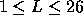

| Krypton Factor |
You have been employed by the organisers of a Super Krypton Factor Contest in which contestants have very high mental and physical abilities. In one section of the contest the contestants are tested on their ability to recall a sequence of characters which has been read to them by the Quiz Master. Many of the contestants are very good at recognising patterns. Therefore, in order to add some difficulty to this test, the organisers have decided that sequences containing certain types of repeated subsequences should not be used. However, they do not wish to remove all subsequences that are repeated, since in that case no single character could be repeated. This in itself would make the problem too easy for the contestants. Instead it is decided to eliminate all sequences containing an occurrence of two adjoining identical subsequences. Sequences containing such an occurrence will be called ``easy''. Other sequences will be called ``hard''.
For example, the sequence ABACBCBAD is easy, since it contains an adjoining repetition of the subsequence CB. Other examples of easy sequences are:
Some examples of hard sequences are:
In order to provide the Quiz Master with a potentially unlimited source of questions you are asked to write a program that will read input lines that contain integers n and L (in that order), where n > 0 and L is in the range  , and for each input line prints out the nth hard sequence (composed of letters drawn from the first L letters in the alphabet), in increasing alphabetical order (alphabetical ordering here corresponds to the normal ordering encountered in a dictionary), followed (on the next line) by the length of that sequence. The first sequence in this ordering is A. You may assume that for given n and L there do exist at least n hard sequences.
For example, with L = 3, the first 7 hard sequences are:
A
AB
ABA
ABAC
ABACA
ABACAB
ABACABA
As each sequence is potentially very long, split it into groups of four (4) characters separated by a space. If there are more than 16 such groups, please start a new line for the 17th group.
Therefore, if the integers 7 and 3 appear on an input line, the output lines produced should be
ABAC ABA 7
Input is terminated by a line containing two zeroes. Your program may assume a maximum sequence length of 80.
30 3 0 0
ABAC ABCA CBAB CABA CABC ACBA CABA 28